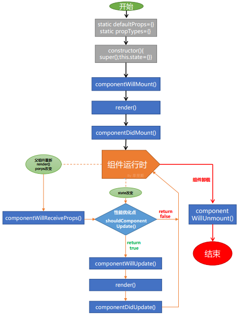

深入理解生命周期
下图为 React 完整的生命周期

父子组件的渲染顺序
- 父组件 Constructor
- 父组件 ComponentWillMount
- 子组件 Constructor
- 子组件 ComponentWillMount
- 子组件 ComponentDidMount
- 父组件 ComponentDidMount
异步
class Quiz extends Component {
componentWillMount() {
axios.get('/thedata').then(res => { //各种异步操作
this.setState({items: res.data});
});
}
render() {
return (
<ul>
{this.state.items.map(item =>
<li key={item.id}>{item.name}</li>
)}
</ul>
);
}
}
这里有一个问题：当异步获取数据时，异步函数会在所有同步函数（包括这种生命周期钩子函数）执行完之后再执行，也就是说，组件在数据加载之前render 函数会执行一次，此时 this.state.items 是未定义的。 这又意味着 ItemList 将 items 定义为 undefined，并且在控制台中出现错误 - Uncaught TypeError: Cannot read property 'map' of undefined。
其实这个问题的解决倒是不到，只需要：添加构造函数，并在其中初始化 this.state = { items: [] }
这里就这个细节希望大家稍加留意；